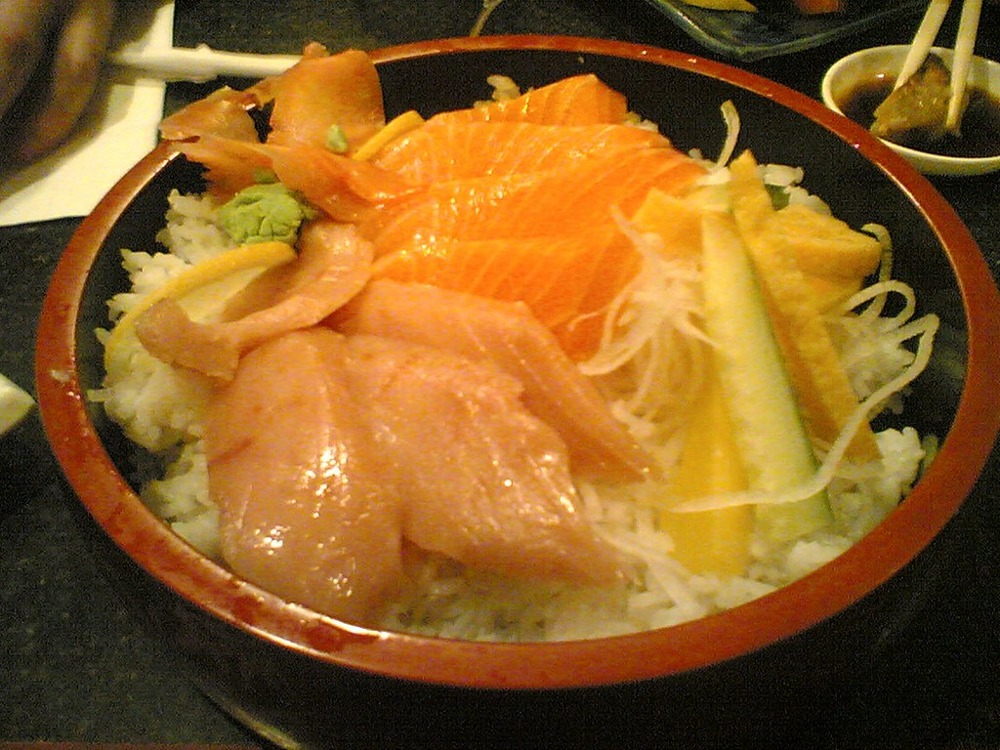
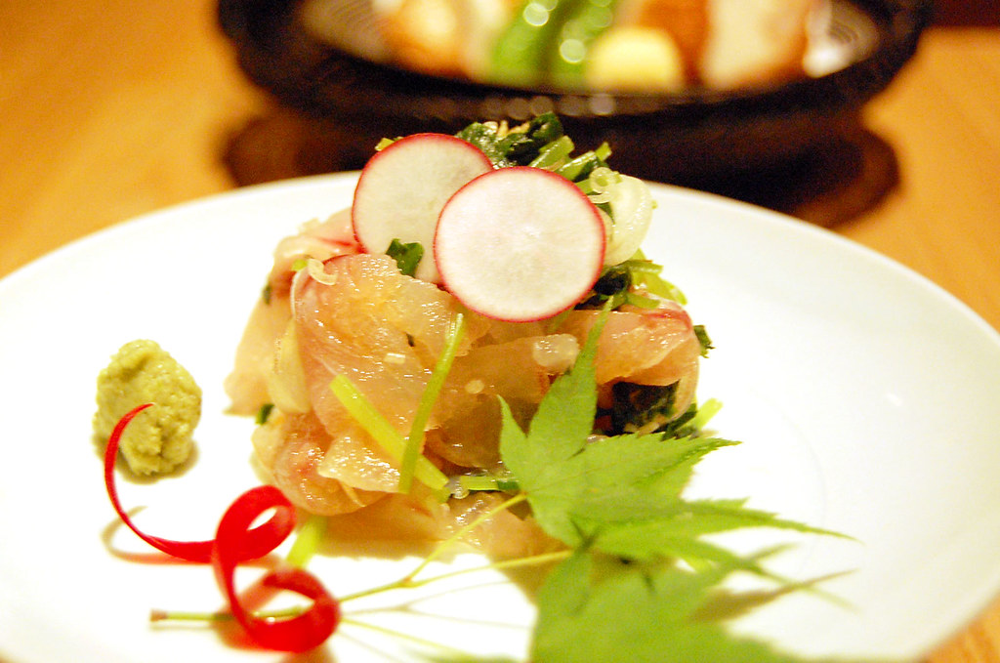

今回で3回目の訪問 鮮魚を扱う居酒屋で断トツでオススメのお店です 旬によっておすすめの鮮魚が変わる為違った魚が味わえます 個人的に 本日のおすすめ、 くんせいポテトサラダ、五泉のばくだん、 イカわたの陶板焼き、大海老ほろよい漬け、 カレイの生姜醤油揚げ、 あさ井特製スパイス鶏のから揚げ は注文必須です ※予約は必須です 駐車場はお店の後ろに数台ありました

新潟県五泉市 鮮魚を扱う居酒屋
その日の旬が、その日だけの一皿になる。
新潟県五泉市 鮮魚を扱う居酒屋「旬魚旬菜 あさ井」
※ご来店の際は事前のご予約をおすすめしております

旬の鮮魚
旬で変わる、五泉の鮮魚
旬魚旬菜 あさ井では、その日の仕入れによっておすすめの鮮魚が変わります。訪れるたびに違う魚と出会えることが、何度も足を運んでくださるお客様に支持されている理由のひとつです。実際に3回目のご来店というお客様から「鮮魚を扱う居酒屋で断トツでオススメ」とのお声もいただいています。
店内写真は近日公開予定です
店内の雰囲気
白を基調とした、和モダンな空間
白を基調とした店内は和モダンな雰囲気で、お客様からも「とても好感がもてる」とのお声をいただいています。落ち着いた空間で、旬の魚と地酒をゆっくりとお楽しみください。
お料理とお酒
クチコミで人気の一皿
いずれもお客様の投稿でよく挙がる一皿です。
お酒の写真は近日公開予定です
日本酒・お酒
佐渡を渡り歩いた、店主厳選の地酒
店主が佐渡を渡り歩いて見つけてきた地酒を中心に取り揃えています。「その日のおすすめ」を尋ねていただくのがおすすめの楽しみ方です。生ビールはサントリー「ザ・プレミアム・モルツ マスターズドリーム」、ハイボールは3種、サワーも豊富にご用意しています。
味良し、量良し、雰囲気良し。ただ日常的に個人で行くにはちょっとお高いかなぁ。 宴会🍻の際にはとても満足出来るお店です🙂👍。
五泉で魚を食べるならまずここ！！ 刺身から料理まで、 幅広く魚料理が楽しめます。 魚以外にもここでしか食べれない 料理がたくさんあります！！ 日本酒は店主が佐渡を渡り歩いて 見つけてきた良酒ばかり。 ぜひその日のオススメを尋ねて見てください。 ビールはプレモルのマスターズドリームを 生ビールで飲めちゃいます！！ その他ハイボールは3種、 サワーも数多くあり満足間違いなしです。 また次も来たくなるお店です！！
アクセス・ご予約
五泉市吉沢の店舗へ
〒959-1824 新潟県五泉市吉沢2丁目2-10
店舗裏に駐車場をご用意しております。
ご来店の際は事前のご予約をおすすめしております(予約必須)。